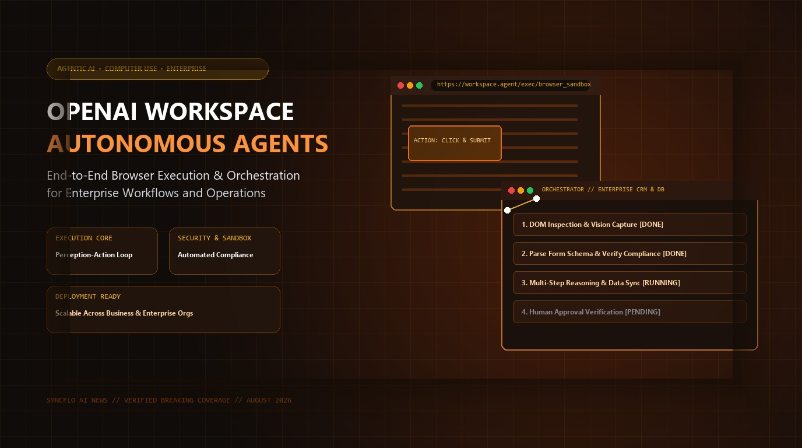

OpenAI Launches Autonomous Workspace Agents: Multi-Step Browser Execution and Enterprise Workflow Orchestration

SAN FRANCISCO, CA — August 25, 2026 — Transitioning AI from passive chatbots to active digital collaborators, OpenAI has officially rolled out Workspace Agents, an enterprise-grade agentic platform capable of autonomously operating web browsers, navigating complex SaaS interfaces, and orchestrating multi-step business processes with integrated security governance.
1. From Experimental CUA to Full Workspace Autonomy
Following the early research preview of "Operator" in 2025, OpenAI has evolved its Computer-Using Agent (CUA) technology into a hardened, production-ready system. Workspace Agents can view graphical user interfaces via low-latency visual streams, parse underlying DOM and API layers, and take precision mouse and keyboard actions inside isolated virtual sandbox browsers.
Rather than requiring rigid API integrations for every SaaS application, Workspace Agents interact with software exactly as human knowledge workers do—reading dashboards, filling multi-page financial filings, cross-referencing customer records, and synchronizing enterprise databases.
"Workspace Agents represent the next paradigm of enterprise productivity. By giving foundation models the ability to reason, navigate the web, and execute actions safely within audited boundaries, we are empowering teams to delegate hours of repetitive digital labor to intelligent AI coworkers."
2. The Perception-Reasoning-Action Loop
The architecture of OpenAI Workspace Agents is structured around a continuous three-phase execution cycle designed to maintain high accuracy and fault tolerance:
- Visual Perception: The agent captures high-resolution screenshots and DOM state representations, identifying interactable buttons, dropdowns, and form fields.
- Chain-of-Thought Reasoning: A reasoning core evaluates the current state against the primary goal, decomposes next steps, and plans error-recovery paths if unexpected popups or Captchas arise.
- Sandboxed Action Execution: Commands are dispatched to an isolated Chromium container with strict egress filtering, preventing unauthorized network requests and data leakage.
- Human-in-the-Loop Safeguards: High-risk operations—such as approving financial wire transfers or sending external legal agreements—automatically pause execution for human verification.
Enterprise Capabilities: OpenAI Workspace Agents
3. Enterprise Integration with Microsoft Ecosystem
Through close partnership with Microsoft, Workspace Agents are deeply integrated into Microsoft 365 Copilot and Azure AI Agent Service, allowing enterprise administrators to deploy and monitor fleets of specialized agents across corporate tenants with role-based access control (RBAC).
Early enterprise customers reporting benchmark results noted a 70% reduction in customer onboarding cycle times and over 85% accuracy in complex multi-step procurement validations.
4. The Road to Full Organizational Intelligence
As agentic systems evolve from single-session assistants into continuous digital teammates, organizations are shifting how workflows are designed. With OpenAI Workspace Agents, the focus moves from individual prompt engineering toward agent orchestration, verification frameworks, and cross-functional task automation.